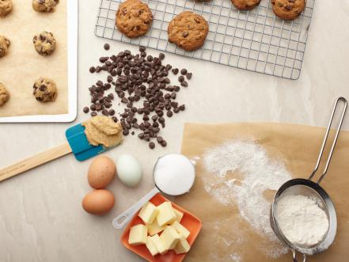

Cookies

It's fun and easy to cook cookies! Just follow these simple steps. Just like mom used to make!. Not my mom, though, she was a terrible cook.
Ingredients
- 1/2 cup butter, softened
- 1/2 cup white sugar
- 1/2 cup packed brown sugar
- 1 egg
- 1/2 teaspoon vanilla extract
- 1/2 teaspoon almond extract
- 1 1/2 cups all-purpose flour
- 1/2 teaspoon baking soda
- 1/2 teaspoon salt
- 1/2 cup semisweet chocolate chips
- 1/2 cup chopped walnuts
Directions
- Preheat oven to 375 degrees F (190 degrees C).
- Cream together the butter, white sugar, and brown sugar until smooth.
- Beat in the egg, then stir in the vanilla and almond extracts.
- Combine the flour, baking soda, and salt; stir into the creamed mixture until just blended.
- Mix in the chocolate chips and walnuts. Drop by rounded spoonfuls onto ungreased cookie sheets.
- Bake for 8 to 10 minutes in the preheated oven.
+
- Allow cookies to cool on baking sheet for 5 minutes before transferring to a wire rack to cool completely.